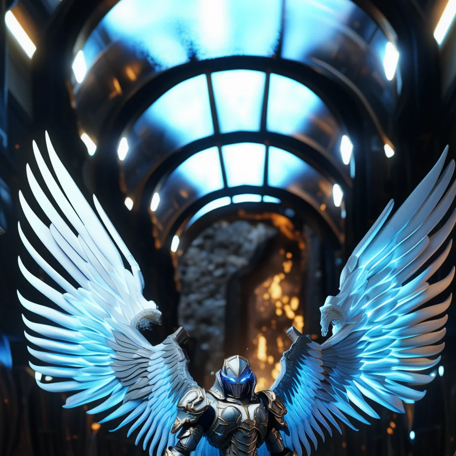
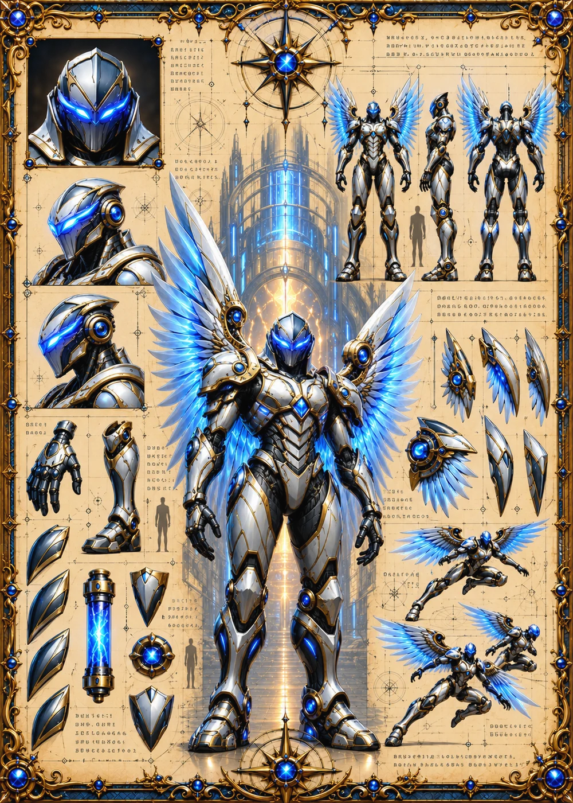

©
©
GENEZYS ARCHIVE · Earth 1 · Legionnaire
Orida
Frostbite Saver

Archive record
Orida's suit runs two cores that should never coexist, one burning and one frozen. The paradox nearly ended Orida's training before it began; now Fire Ice is the strangest weapon the Vanguard carries. Of all the Legions who would answer the Beacon, only Orida brings winter with the light.
Combat signature
Fire Ice
100 Cosmara
350 Animus
320 Vitalis
Shines with paradoxical burning frost: Performs normal attack on 2 different enemies. Reduces Cosmara of the third enemy by 100.
Genezys 01:08 ™&©2026LEGIONS
